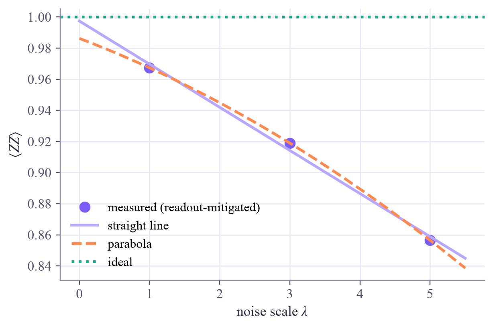

probabilities of 00, 01, 10, 11: [0.465 0.061 0.056 0.419] ideal: [0.5 0 0 0.5] <ZZ> = 0.768 (ideal: 1)
Quantum Computing
 about 14 min
about 14 min qc-w6d5.ipynb
qc-w6d5.ipynb
Project: noisy simulation and error mitigation
Build a realistic noise model, then fight back: undo readout errors with a calibration, and extrapolate gate noise to zero by making it worse on purpose.
In this lesson you will
- Build a noise model with gate and readout errors, and simulate it with Qiskit Aer
- Correct readout errors with a calibration matrix
- Use zero-noise extrapolation, and say what mitigation can and can't do
Warm-up
1 minCan't fix it? Estimate around it

This week showed how noise creeps into every gate and every measurement. Proper error correction needs many physical qubits per logical one, more than today's chips can spare. Until then, researchers use error mitigation: run a few extra circuits and post-process the numbers, so that the average answer comes out close to the noiseless one. Today you'll do exactly that.
Big idea
4 minTwo tools for two kinds of error
Readout-error mitigation. Measurements sometimes misread: a 1 decays to 0 during readout, say 8% of the time. Measure that first: prepare each basis state, record how often it is read as what, and collect the frequencies in a calibration matrix (column = prepared state, row = result). The noisy probabilities are , so
For qubits the full matrix has columns, so in practice one assumes the qubits misread independently and calibrates each separately.
Zero-noise extrapolation (ZNE). Gate noise can't be calibrated away like that, but it can be amplified. Replace a CNOT by three CNOTs (since , the circuit computes the same thing with three times the noise; this is folding). Measure your expectation value at noise scales , fit a curve, and read it off at .
The fine print. Mitigation fixes the average, not individual shots, so it works for expectation values. It costs extra circuits and shots, and it amplifies shot noise: the extrapolated number wobbles more than the raw one. The fit model matters too: a straight line through points on a curve misses a little. It's a bridge to error correction, not a replacement.
Calibrate what you can measure (readout), extrapolate what you can amplify (gate noise), and pay for it with extra shots.
Play
4 minExtrapolate to zero noise
Each dot is the Bell state's (ideal: 1) measured with the CNOT noise multiplied by . The star is the extrapolation to .
Try this
With readout errors on, the star misses 1 by a lot: folding doesn't amplify readout errors, so extrapolation can't remove them. Switch on the calibration. Then crank the CNOT error to 8% and compare the straight line with the exponential fit. Finally, take 1,000 shots with the parabola and press Run the experiment again a few times: watch the star jump.
Code
2 minMitigation in Qiskit
The notebook for this lessonEvery code cell below, with what it printed, is in
qc-w6d5.ipynb. To change the code and run it yourself, open the notebook in Google Colab (free, in your browser) or download it for your own Jupyter.import numpy as np
import matplotlib.pyplot as plt
from qiskit import QuantumCircuit, transpile
from qiskit_aer import AerSimulator
from qiskit_aer.noise import NoiseModel, depolarizing_error, ReadoutError
noise = NoiseModel()
noise.add_all_qubit_quantum_error(depolarizing_error(0.002, 1), ["h", "x"]) # small one-qubit gate errors
noise.add_all_qubit_quantum_error(depolarizing_error(0.03, 2), ["cx"]) # 3% per CNOT
noise.add_all_qubit_readout_error(ReadoutError([[0.97, 0.03], # a 0 is read as 1 3% of the time
[0.08, 0.92]])) # a 1 is read as 0 8% of the time
sim = AerSimulator(noise_model=noise)
def run(circuit, shots=20000, seed=1):
"""Counts as probabilities for '00', '01', '10', '11' (no gate cancellation: optimization_level=0)."""
counts = sim.run(transpile(circuit, sim, optimization_level=0), shots=shots, seed_simulator=seed).result().get_counts()
return np.array([counts.get(format(i, "02b"), 0) / shots for i in range(4)])
def bell(folds=1):
qc = QuantumCircuit(2)
qc.h(0)
for _ in range(folds): # 1, 3 or 5 CNOTs: since CX * CX = I, the same circuit with more noise
qc.cx(0, 1)
qc.measure_all()
return qc
zz = lambda p: p[0] - p[1] - p[2] + p[3] # <ZZ> from the probabilities of 00, 01, 10, 11
p_noisy = run(bell())
print("probabilities of 00, 01, 10, 11:", p_noisy.round(3), " ideal: [0.5 0 0 0.5]")
print(f"<ZZ> = {zz(p_noisy):.3f} (ideal: 1)")What it printed in the notebook
M = np.zeros((4, 4))
for i in range(4):
prep = QuantumCircuit(2)
for q, bit in enumerate(reversed(format(i, "02b"))):
if bit == "1":
prep.x(q)
prep.measure_all()
M[:, i] = run(prep, seed=10 + i)
print("calibration matrix (column = prepared 00, 01, 10, 11):")
print(M.round(3))
p_fixed = np.linalg.solve(M, p_noisy) # the same as M^-1 @ p_noisy
print("after readout mitigation:", p_fixed.round(3), f" <ZZ> = {zz(p_fixed):.3f}")What it printed in the notebook
calibration matrix (column = prepared 00, 01, 10, 11): [[0.94 0.078 0.078 0.006] [0.031 0.892 0.003 0.072] [0.029 0.002 0.891 0.075] [0.001 0.028 0.028 0.847]] after readout mitigation: [0.49 0.011 0.005 0.493] <ZZ> = 0.967
lams = np.array([1, 3, 5])
values = np.array([zz(np.linalg.solve(M, run(bell(k), seed=k))) for k in lams]) # readout-mitigated
linear = np.polyfit(lams, values, 1)
richardson = np.polyfit(lams, values, 2)
print("<ZZ> at noise scale 1, 3, 5:", values.round(4))
print(f"straight-line extrapolation to 0: {np.polyval(linear, 0):.4f}")
print(f"parabola (Richardson) to 0: {np.polyval(richardson, 0):.4f}")
xs = np.linspace(0, 5.5, 100)
plt.plot(lams, values, "o", color="#7b5cfa", ms=8, label="measured (readout-mitigated)")
plt.plot(xs, np.polyval(linear, xs), color="#b9a7ff", label="straight line")
plt.plot(xs, np.polyval(richardson, xs), color="#ff8a50", ls="--", label="parabola")
plt.axhline(1, color="#17a98c", ls=":", label="ideal")
plt.xlabel(r"noise scale $\lambda$")
plt.ylabel(r"$\langle ZZ\rangle$")
plt.legend()
plt.show()What it printed in the notebook
<ZZ> at noise scale 1, 3, 5: [0.9673 0.919 0.8565] straight-line extrapolation to 0: 0.9974 parabola (Richardson) to 0: 0.9863

Project
3 minProject: put it all together
- Compute four estimates of : raw, readout mitigation only, ZNE only (on the raw values), and both.
- Which is closest to 1? Explain why ZNE alone can't fix the readout errors.
- Count the cost: how many circuits did "both" need, compared with the raw estimate?
raw_values = np.array([zz(run(bell(k), seed=k)) for k in lams])
estimates = {
"raw": raw_values[0],
"readout only": 0.0, # TODO: zz of the readout-mitigated probabilities at lambda = 1
"ZNE only": 0.0, # TODO: np.polyval(np.polyfit(lams, raw_values, 1), 0)
"both": 0.0, # TODO: the same, using the readout-mitigated values
}
for name, value in estimates.items():
print(f"{name:13s} {value:.4f} error {abs(value - 1):.4f}")Need a hint?
Readout-mitigate a distribution with np.linalg.solve(M, probabilities), then take zz(...). A straight-line extrapolation to 0 is np.polyval(np.polyfit(lams, values, 1), 0).
Show a solution
raw_values = np.array([zz(run(bell(k), seed=k)) for k in lams])
fixed_values = np.array([zz(np.linalg.solve(M, run(bell(k), seed=k))) for k in lams])
estimates = {
"raw": raw_values[0],
"readout only": fixed_values[0],
"ZNE only": np.polyval(np.polyfit(lams, raw_values, 1), 0),
"both": np.polyval(np.polyfit(lams, fixed_values, 1), 0),
}
for name, value in estimates.items():
print(f"{name:13s} {value:.4f} error {abs(value - 1):.4f}")
print("Folding multiplies the gate noise but not the readout noise, so extrapolation alone can't remove it.")
print("Each tool fixes its own kind of error; together they land within a percent of the ideal, at the price of")
print("running 3 circuits plus 4 calibrations instead of 1.")What it printed in the notebook
raw 0.7677 error 0.2323 readout only 0.9673 error 0.0327 ZNE only 0.7917 error 0.2083 both 0.9974 error 0.0026 Folding multiplies the gate noise but not the readout noise, so extrapolation alone can't remove it. Each tool fixes its own kind of error; together they land within a percent of the ideal, at the price of running 3 circuits plus 4 calibrations instead of 1.
Check yourself
1 minQuick check
Question 1 of 3
Why can three CNOTs replace one in zero-noise extrapolation?
Question 2 of 3
Which errors does a calibration matrix fix?
Question 3 of 3
What's the main price of error mitigation?
Wrap-up
1 minThis week in one sentence
Quantum link
Quantum ML experiments on real hardware almost always use mitigation, because a classifier's output is an expectation value: exactly what ZNE and readout calibration can repair. The Quantum ML tutorial's last week asks how noise changes what a quantum model can learn.
Go deeper (optional)
Temme, Bravyi and Gambetta, "Error mitigation for short-depth quantum circuits" (Physical Review Letters, 2017), introduced zero-noise extrapolation. For a broad, readable survey: Cai and coauthors, "Quantum error mitigation" (Reviews of Modern Physics, 2023).
That's week 6 of Quantum Computing! Saturday: optional flashback. Next week: circuits with knobs, the road to quantum machine learning.

That's the lesson!
Tap the button to save it. Short and steady wins.
Marked by mistake? Undo